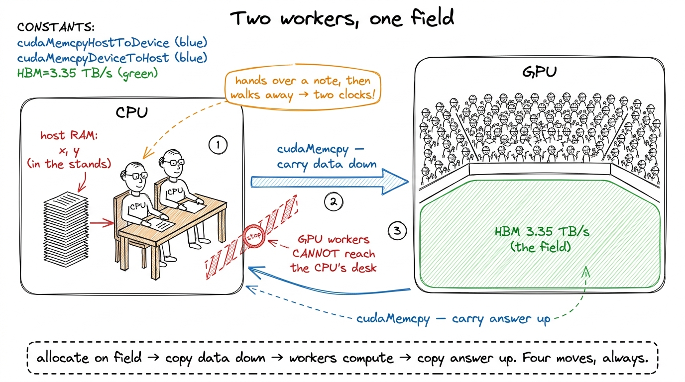
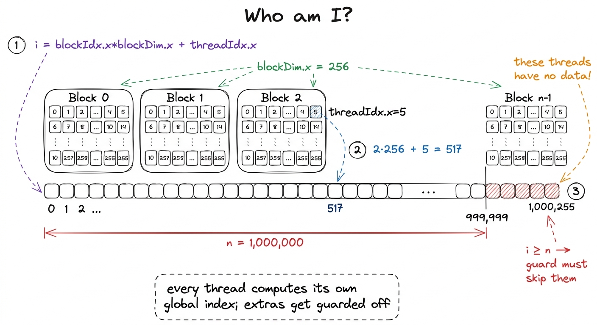
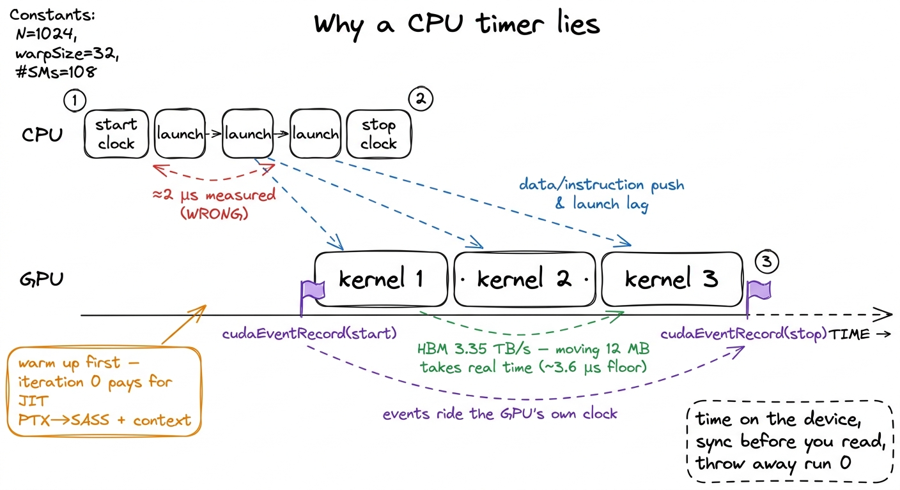

Your first kernel, end to end
Every kernel you will ever write is the same four moves: get some memory onto the device, launch a grid of threads over it, have each thread do a little arithmetic on its own slice, and get the answer back. That is the whole job. The optimizations that fill the rest of this site — coalescing, shared memory, tensor cores — are refinements to move three; they mean nothing until move one, two, and four are second nature. So before we chase a single percent of cuBLAS, we are going to write two complete, correct, benchmarked kernels from an empty file. The first is SAXPY, the "hello world" of GPU compute. The second, RGB→grayscale, is the exact same skeleton with two spatial dimensions and a real memory layout — which is all an image is.
Neither kernel is fast, and neither is supposed to be. Both are memory-bound by construction — they do one or two flops per byte and could never be anything else — so this is not an article about speed. It is about the workflow: the launch config, the boundary check that everyone forgets on their first try, the host/device dance, and the surprisingly easy-to-get-wrong ritual of timing a thing that runs asynchronously. Get this workflow into your fingers and every later article is just a new middle.
SAXPY: one thread, one element
SAXPY stands for Single-precision A·X Plus Y: given a scalar a and two vectors x and y, compute y = a·x + y element-wise. It is one line of math, and the GPU decomposition is the one you will reach for a thousand times: one thread per element. Thread i reads x[i] and y[i], does one multiply and one add, and writes y[i] back. No thread talks to any other. This "embarrassingly parallel map" is Puzzle 1 of Sasha Rush's GPU-Puzzles, and it is the mental model to burn in first.1 GPU-Puzzles builds its early kernels in exactly this order — Map, Zip, Guards, Map-2D, Broadcast, Blocks, Blocks-2D, Shared — which is not a coincidence. It is the natural dependency graph of the programming model, and this article walks the same staircase in CUDA C++ instead of Numba.
The kernel itself is almost anticlimactic:
__global__ void saxpy(int n, float a, const float* x, float* y) {
int i = blockIdx.x * blockDim.x + threadIdx.x;
if (i < n) // the guard — see below
y[i] = a * x[i] + y[i];
}Three things are load-bearing here. __global__ marks this as a kernel: code that runs on the device but is launched from the host. The index computation blockIdx.x * blockDim.x + threadIdx.x is the single most important arithmetic expression in all of CUDA — it is how a thread discovers which element it owns. And the if (i < n) is the guard, the boundary check, and it is not optional.

figure rendering · The global thread index. Each thread turns its block and lane identityWhy the guard is mandatory falls straight out of the launch config. I want one thread per element, but threads only come in blocks of a fixed size, and n is almost never a multiple of that size. A block of 256 threads is a good default — big enough to hide latency, a multiple of the 32-thread warp, well under the 1024-thread-per-block ceiling. To cover n elements I need ceil(n / 256) blocks:
int threads = 256;
int blocks = (n + threads - 1) / threads; // ceil-div, rounds UP
saxpy<<<blocks, threads>>>(n, 2.0f, d_x, d_y);That ceiling division is the point. For n = 1,000,000 it launches 3907 blocks × 256 threads = 1,000,192 threads — 192 more than I have data for.2 The alternative — sizing the grid to divide evenly and looping inside the kernel (a grid-stride loop) — is the more scalable pattern for huge arrays and I use it in production. But for a first kernel the round-up-and-guard form makes the boundary problem impossible to ignore, which is the pedagogical point. Those extra threads run the kernel body just like everyone else. Without if (i < n) they would compute y[1000192] and scribble into memory I never allocated — an out-of-bounds write that, on a good day, crashes, and on a bad day silently corrupts a neighbor and gives you a wrong answer three kernels later. The guard is one branch that costs one warp a fraction of its lanes on exactly one block. It is the cheapest insurance in computing.
The host/device dance
The kernel is the easy half. The unglamorous half is that the GPU cannot see your CPU's memory. x and y live in host RAM; the kernel reads device memory (HBM). So every GPU program is a four-beat rhythm: allocate on device → copy in → launch → copy out.
float *d_x, *d_y;
size_t bytes = n * sizeof(float);
cudaMalloc(&d_x, bytes); // 1. allocate on device
cudaMalloc(&d_y, bytes);
cudaMemcpy(d_x, h_x, bytes, cudaMemcpyHostToDevice); // 2. copy in
cudaMemcpy(d_y, h_y, bytes, cudaMemcpyHostToDevice);
saxpy<<<blocks, threads>>>(n, 2.0f, d_x, d_y); // 3. launch
cudaMemcpy(h_y, d_y, bytes, cudaMemcpyDeviceToHost); // 4. copy out
cudaFree(d_x); cudaFree(d_y);Two things about this code are exactly the kind of thing that bites you. First, the d_ versus h_ prefix convention is not decoration — a device pointer dereferenced on the host is a segfault, and the compiler will not stop you, because to C++ they are both just float*. The naming is the only type safety you get. Second — and this is the one that trips up every benchmark — that fourth cudaMemcpy is the only line here that blocks. The kernel launch on line 3 is asynchronous: <<<...>>> returns to the CPU almost immediately, before a single thread has run.3 Launches are queued into a stream and executed in order by the GPU while the CPU races ahead. This is a feature — it lets you overlap CPU work, or queue many kernels back-to-back — but it means a CPU-side stopwatch around a bare launch measures the launch, not the work. The copy-out happens to block, which is why naive benchmarks that include it look "fine" and naive benchmarks that don't look impossibly fast. The copy-out blocks because it has to wait for the data, which drags the whole pipeline to a stop — which is exactly why you cannot trust a wall-clock timer here, as we are about to see.
Benchmarking without lying to yourself
Here is the trap. You wrap the launch in a CPU timer, print the number, and it says the kernel took two microseconds — a hundred times faster than physics allows for moving eight megabytes. You have not written the world's fastest SAXPY; you have timed how long it takes the CPU to hand the GPU a note and walk away. The work happens later, on the GPU's clock, which your CPU stopwatch cannot see.
The fix is to time on the device's own clock using CUDA events — markers you drop into the stream that the GPU timestamps as it reaches them — and to respect two more rules that separate a real number from a fantasy:
- Warm up. The very first launch pays one-time costs: the driver JIT-compiles PTX to SASS for your specific GPU, allocates context, warms caches. Discard the first few iterations or you are benchmarking the compiler.
- Repeat and average. One run is noise. Loop the kernel many times between the events and divide, so scheduler jitter and clock-boost ramp average out.
cudaEvent_t start, stop;
cudaEventCreate(&start); cudaEventCreate(&stop);
for (int i = 0; i < 5; ++i) // warmup: absorb JIT + caches
saxpy<<<blocks, threads>>>(n, 2.0f, d_x, d_y);
const int REP = 100;
cudaEventRecord(start);
for (int i = 0; i < REP; ++i) // the measured loop
saxpy<<<blocks, threads>>>(n, 2.0f, d_x, d_y);
cudaEventRecord(stop);
cudaEventSynchronize(stop); // WAIT for the GPU to finish
float ms = 0;
cudaEventElapsedTime(&ms, start, stop); // device-clock milliseconds
ms /= REP;The cudaEventSynchronize(stop) is the line the async trap was hiding: it makes the CPU wait until the GPU has actually reached the stop marker before we read the elapsed time. Skip it and you read a timer for work that has not happened.

figure rendering · The async gap. The CPU finishes launching before the GPU finishes compWith that harness, what does SAXPY actually clock? It touches three 4-byte words of traffic per element — read x, read y, write y, so 12 bytes of memory for two flops — an arithmetic intensity of 2/12 ≈ 0.17 FLOPs per byte. From the three regimes we know that is roughly seventeen hundred times below the H100's ridge point of ~295, so this kernel will never see a tensor core; its ceiling is pure bandwidth. And that is the honest way to report it: not "X TFLOP/s" (a rounding error) but as a fraction of the 3.35 TB/s HBM3 wall. A clean SAXPY on an H100 lands in the low-terabytes-per-second range — a healthy chunk of that wall — and the correct reaction is satisfaction, because for a memory-bound kernel bandwidth is the score. Chasing flops here would be chasing the wrong number entirely.
Same skeleton, real data: RGB→grayscale
Now let's prove the skeleton generalizes. An image is not a mysterious object; it is a flat array of bytes with an agreed-upon layout. A W × H RGB image in the standard interleaved layout is H * W * 3 unsigned chars, ordered R,G,B, R,G,B, … row by row. Converting to grayscale is the textbook luminance weighting — gray = 0.21·R + 0.72·G + 0.07·B — and it is, once again, one thread per output pixel. The only new idea is that pixels live on a 2D grid, so we index in 2D.
__global__ void rgb_to_gray(const unsigned char* rgb, unsigned char* gray,
int W, int H) {
int col = blockIdx.x * blockDim.x + threadIdx.x; // x → column
int row = blockIdx.y * blockDim.y + threadIdx.y; // y → row
if (col < W && row < H) { // 2D guard
int gray_idx = row * W + col; // 1 channel
int rgb_idx = gray_idx * 3; // 3 interleaved channels
unsigned char r = rgb[rgb_idx + 0];
unsigned char g = rgb[rgb_idx + 1];
unsigned char b = rgb[rgb_idx + 2];
gray[gray_idx] = (unsigned char)(0.21f*r + 0.72f*g + 0.07f*b);
}
}Everything you learned on SAXPY transfers verbatim; the deltas are worth naming precisely. The launch config gains a dimension — a 2D block tiles the image, and dim3 carries the extents:
dim3 block(16, 16); // 256 threads, now 16×16
dim3 grid((W + 15) / 16, (H + 15) / 16); // ceil-div on BOTH axes
rgb_to_gray<<<grid, block>>>(d_rgb, d_gray, W, H);The guard becomes col < W && row < H — the same round-up-then-guard logic, now on two axes, because a 16×16 block tiling a 1920×1080 frame overhangs the right and bottom edges simultaneously. And the index arithmetic is the one genuinely new muscle: the code reads two arrays with two different strides. The output gray is one channel, so pixel (row, col) lives at row * W + col — this row * width + col flattening of a 2D coordinate into a 1D offset is the single most common index pattern in all of GPU programming, and it is worth being able to write in your sleep. The input rgb is three interleaved channels, so the same pixel starts at 3 * (row * W + col) and the three color bytes are consecutive from there.

figure rendering · Left: the grid rounds up and overhangs on both axes, so the guard is 2Profile this one and the story rhymes with SAXPY: three bytes in, one byte out, a pinch of arithmetic per pixel — flatly memory-bound, riding the HBM3 bandwidth, tensor cores dark and irrelevant. Which is the correct and slightly boring outcome, and exactly why we started here.
What you actually built
Two kernels, one skeleton. Strip away the specifics and both are: compute a global index, guard it against the ragged edge of the grid, read your inputs, write your output — wrapped in the host ritual of cudaMalloc, cudaMemcpy in, launch, cudaMemcpy out, and timed honestly with warmup, cudaEventRecord, a repeat loop, and a cudaEventSynchronize before you dare read the clock. That is the entire CUDA programming model in one page, and you will not write a kernel for the rest of this course that abandons it.
We also earned the right to be unimpressed by our own numbers. Both kernels are memory-bound by their arithmetic intensity, so the correct scoreboard was bandwidth, not flops — and predicting that before profiling is the predict-then-measure habit the whole site runs on. What we have not touched is reuse: every byte here made exactly one trip from HBM and was used once. The moment a workload wants to read the same byte more than once — which is every interesting kernel, starting with matrix multiply — this naive map is no longer enough, and we need somewhere fast and on-chip to stage data. That somewhere is shared memory, and it is where the real climb from 1.3% of cuBLAS begins.